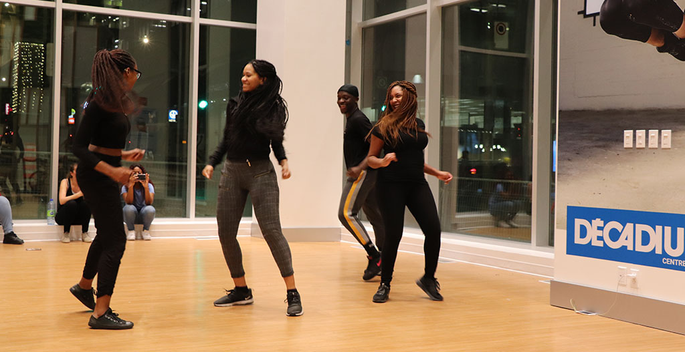
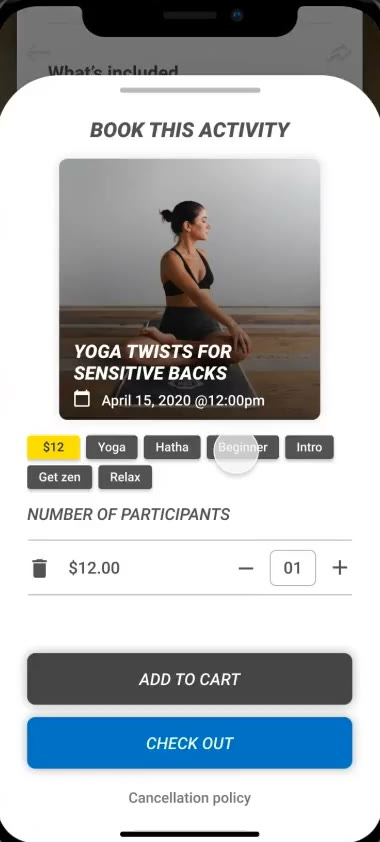
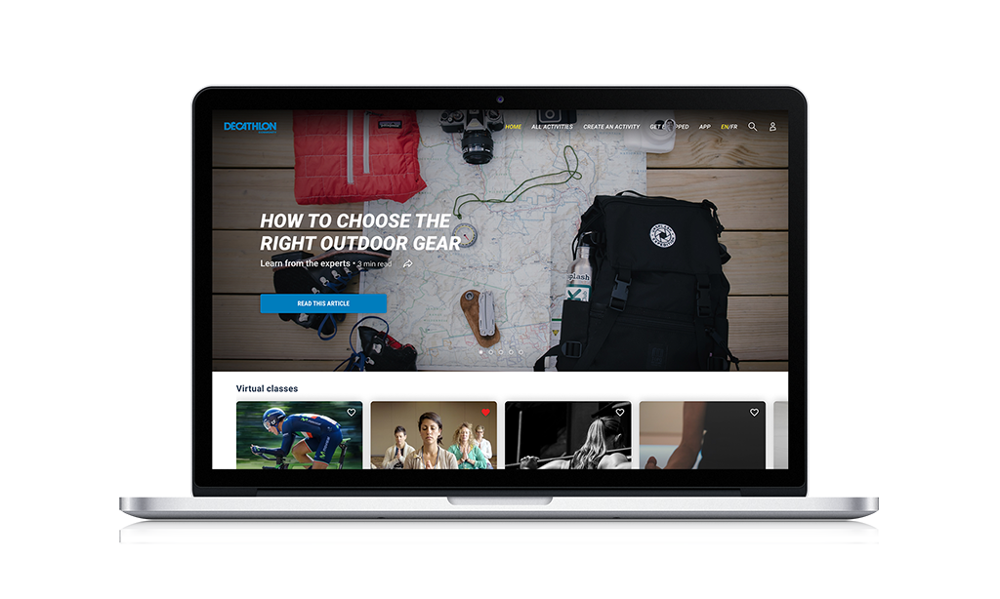

The world
went indoors.
Gyms closed.
Group classes vanished.
The rituals that kept people moving simply stopped.
Decathlon asked one question.
How do we help people stay active, healthy and connected when the world has gone indoors?
Decathlon Community was the answer to that moment: a place to find local activities, book a session with a real coach, and keep moving.
We listened to both sides.
Coaches, trainers, gym owners and independent fitness professionals on one side. People stuck at home on the other.
Coaches had lost their income, their communities, and their way of motivating people in person.
Everyday users were searching for ways to stay active, and sane, while stuck indoors.
Those conversations shaped our personas and the first concepts. We tested interactive wireframes with at least five users in each segment, so we were designing for real needs instead of assumptions.
Test. Refine. Test again.
Once the wireframes proved out, we moved into higher-fidelity prototypes and repeated the same cycle. The whole flow had to feel simple and effortless.
I worked closely with a highly engaged engineering team, many of them athletes themselves, so the product shipped with the same clarity and energy as the prototypes.

Discover.
Book.
Check out.
Value on both sides.

Coaches earning again
Decathlon Community gave fitness professionals a way to keep working while gyms were closed and in-person sessions were cancelled. At a time when much of the industry was struggling, it created a new channel for income, visibility and community building.
People moving again
For users, it became a dependable, intuitive hub for discovering local sports and staying connected through movement.
After launch, retention and revenue trended steadily upward, validating the focus on simplicity and clarity.
The platform filled a gap during one of the most disruptive periods in modern memory. It reconnected people to their bodies, their routines and their communities, even when physical distance was non-negotiable.
Now you try it.
The booking flow as a live prototype. Find an activity, pick a session, and check out.
Decathlon Community proved that thoughtful design, grounded in real user needs, can create meaningful impact even in the most challenging conditions.
Decathlon Community is a Decathlon product. Case study by Mike Jerugim.